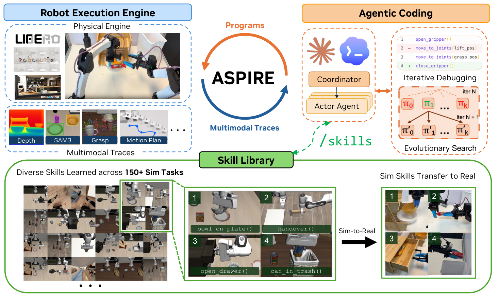
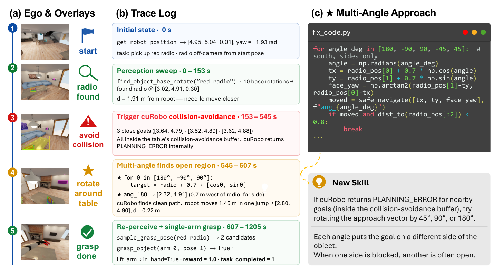

ASPIRE 深度调研笔记
速览
| 项 | 内容 |
|---|---|
| 一句话 | 让 coding agent 当"机器人程序员"：写代码→跑→看 per-primitive 多模态 trace→定位 bug→改→把验证过的修复蒸馏成"失败签名→修复动作"技能库；配进化搜索逃出局部修复环 |
| 冻结 | 底座 LLM（Claude Code；消融 12 模型）与全部环境 API |
| 演化 | 技能库（90+ 技能 / 150+ 任务 / 18 类） |
| 头部结果 | LIBERO-Pro 扰动超 CaP-X +77pp；Robosuite 双臂 +72pp；BEHAVIOR-1K +32pp；Opus 5.5 下 80 任务 99%；仿真技能零样本迁移真机 0/20→11/20 |
| 最硬消融 | 把 rollout 级 0/1 reward 换成 per-primitive trace：LIBERO-Pro 14%→62% |

① 动机
- 之前 CaP agent 的三宗罪：失败只有一个布尔成功位（不知道为什么失败）；修复经验不沉淀（下次同错）；任务间经验不复利。
- 作者重定义（README 三句）："训练是技能精炼（与梯度无关）"、"训练好的模型是感知-动作技能库（与浮点权重无关）"、"分布式训练是一组 agent 各练各的技能（与分批数据无关）"。
- 押注：瓶颈不在"会不会写代码"，在"看不看得见失败"。
② 架构：三大支柱（§3）

- 闭环执行引擎：记录 per-primitive 多模态 trace——感知叠加图、抓取候选、运动轨迹、碰撞反馈。导航返回 PLANNING_ERROR 时，agent 能翻该 primitive 的日志定位（如"采样落点在桌碰撞缓冲区内"），而不是对着 0/1 猜。
- 技能库：存的不是代码片段，是"失败签名 → 修复动作"的条件-动作对。例："当 navigate_to_pose 在桌沿附近反复 PLANNING_ERROR → 以物体为中心按 45°/90°/180° 旋转接近方向重试"。覆盖定位消歧、导航恢复、motion primitive 构造、场景理解等 18 类。
- 进化搜索：每轮提出 K 个候选程序种群，按闭环执行结果选择——专治单条修复路径的死循环。
③ 机制：技能入库的两级门控（技能库不腐烂的关键）
actor（coding agent）提交结构化 findings
→ verifier agent 独立复现该修复 ← 第 1 道门：不同实例重跑
→ 协调器检查 API 合规性 ← 第 2 道门：不越 API 边界
→ 通过才入技能库，供后续任务检索
与 RATs 的"可靠性追踪"殊途同归：都不信任写入者的自我报告。
④ 数据与基准（§5；tex 已验 + 二手读报）
| 基准 | 结果 | 说明 |
|---|---|---|
| LIBERO-Pro（位置/目标扰动） | 超 CaP-X 最高 +77pp | 技能库长出定位消歧/导航恢复等能力 |
| Robosuite 双臂 handover | 最高 +72pp | 接触-rich，小抓取误差毁全程 |
| BEHAVIOR-1K 长程家务 | 最高 +32pp | 导航+抓放+状态跟踪 |
| LIBERO-Pro Long 零样本 | 31% vs 4% | 只用 LIBERO-90 上攒的库——技能库跨任务摊销经验的首个强信号 |
| 换强模型 | Opus 5.5：80 个 LIBERO-Pro 任务平均 99%，代表性 Robosuite/BEHAVIOR-1K 任务 100% | "成功率随底座能力 scaling"（v1.0 公告；另测 GPT-6 Astra） |
| 仿真→真机（双臂 YAM） | 3 条仿真技能作 in-context 指引：开抽屉 tokens 334M→81M，成功 0/20→11/20 | 不同本体、不同 API |
| 真机在线学习 | GPT-6 Astra 三个 session 解魔方，每步时间/token 递减 | 技能以文本形式累积 |
⑤ 信息流（一个修复回合）
任务 → agent 写 Python 程序（统一感知/几何/运动 API） → 执行，逐 primitive 落 trace（叠加图/候选/轨迹/碰撞） → 失败：翻 trace 定位 failing primitive（而非 0/1） → 修程序 / 检索相似失败签名 → 重试 → 成功：findings → verifier 独立复现 → 协调器 API 合规 → 入库 → 局部死循环时：进化搜索出 K 个候选程序并行试
⑥ 例子（二手读报/DAMO 精读）
抽屉任务反复 navigate_to_pose → PLANNING_ERROR：trace 显示采样落点在桌沿碰撞缓冲区 → 生成技能"以物体为中心旋转接近方向重试"→ verifier 复现通过入库 → 后续所有含抽屉的任务检索即得。真机端同一技能以 in-context 指引进入 YAM 双臂站，token 降 76%。
⑦ 实验·消融·成本·局限
- 最硬消融：trace 换 0/1 reward，14%→62%（同模型）——"看得见失败"值 48pp。
- 进化搜索是补丁不是主力：Opus 4.6 时代贡献最高 34pp；Opus 5.5 时代 ≤2%——探索能力正被模型能力吃掉。
- 成本：10 个任务 API 费 $40–600；真机一条失败轨迹 334M tokens。
- 局限：无安全沙箱（生成代码有全量 import 权限，需隔离主机）；"能跑"到"上产线"之间还隔着成功检测、自动复位、安全监控；v1.0 版本号只存在于 README（无 git tag）。
- 开源：Apache 2.0，代码/配置/90+ 技能全开。
⑧ 与另外五篇的关系
- 对 CaP-X：直接以 CaP-X 为基线（+77pp）；继承了其"测试时计算 scaling"论点并加了"经验沉淀"维度。
- 对 RAX：同为纯代码探索路线；RAX 用版本化程序+并行探索拿 LIBERO-Pro 84.4（ASPIRE 63.2，RAX 报告口径），ASPIRE 用 trace+verifier 门控+技能库取胜于可迁移性。
- 对 HarnessPAI：HarnessPAI 在 robosuite Insert 上反超（83 vs ASPIRE 9）——接触-rich 阶段有冻结 VLA 原语兜底的证据。
- 对 RATs：ASPIRE 的技能来自任务期失败修复，RATs 来自任务前自玩；两者技能库可互补。
- 对 Zetta：Zetta 把"看得见失败"做到动作频率（运行时 critic），ASPIRE 做在 primitive 粒度（trace 回看）。